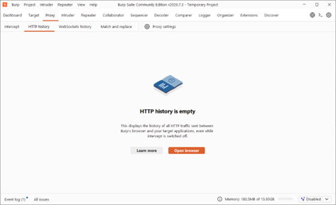
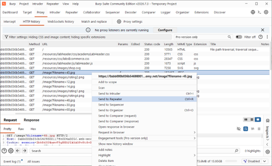
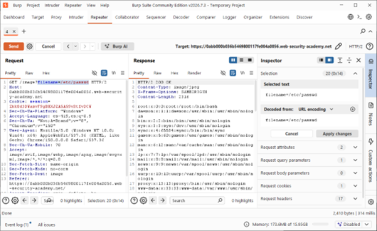
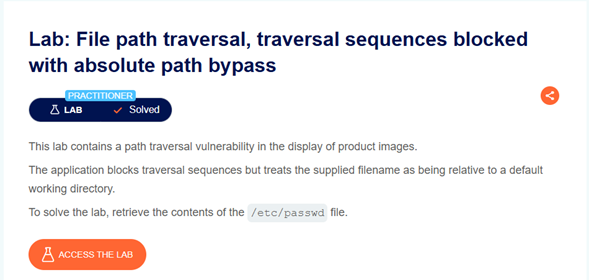

Ficha Técnica
Actividad 08: Lab: File path traversal, traversal sequences blocked with absolute path bypass
Laboratorio de evaluación ofensiva centrado en la evasión de filtros de Directory Traversal mediante el uso de rutas absolutas directas al sistema de archivos.
Dificultad: Practitioner
Vulnerabilidad: CWE-22 (Improper Limitation of a Pathname to a Restricted Directory)
La aplicación bloquea secuencias de salto de directorio (como ../). El objetivo es evadir esta restricción suministrando una ruta absoluta directa para extraer el contenido del archivo sensible /etc/passwd.
Marco Teórico
Fundamentación de la Vulnerabilidad
Según el estándar OWASP Top 10:2021, esta falla se clasifica como A01:2021 - Broken Access Control. En su variante de "Absolute Path Bypass", el desarrollador confía engañosamente en un filtro de lista negra que solo elimina o bloquea secuencias relativas (como ../), omitiendo validar si el usuario inserta directamente una ruta absoluta.
En muchos lenguajes de programación del backend (como Java, PHP o Python), cuando una función resuelve rutas intentando concatenar un "directorio base estático" con un "nombre de archivo suministrado por el usuario", ocurre un fallo lógico: Si la entrada comienza con el carácter raíz /, la función descarta automáticamente el directorio base y resuelve el archivo partiendo directamente desde la raíz del sistema operativo.
Procedimiento
Fase 1: Inicialización y Entorno de Auditoría
Se ingresó al portal de Web Security Academy en la sección del laboratorio "File path traversal, traversal sequences blocked with absolute path bypass". Se configuró el entorno de auditoría iniciando el navegador integrado de Burp Suite desde la pestaña Proxy > HTTP history, listo para registrar el tráfico hacia la aplicación vulnerable.

>_ Evidencia 02: Preparación del módulo Proxy con el historial limpio y el entorno configurado para iniciar la auditoría web.
Fase 2: Identificación del Endpoint Vulnerable
Navegando por la tienda, se capturaron las peticiones de recuperación de recursos visuales. Se identificó la solicitud encargada de las imágenes, en este caso GET /image?filename=45.jpg, la cual fue interceptada y enviada al módulo Repeater (Ctrl+R) para iniciar la fase de modificación de parámetros.

>_ Evidencia 04: Selección y derivación al entorno Repeater del endpoint encargado de la carga de imágenes basado en el parámetro 'filename'.
Fase 3: Evasión (Bypass) y Exfiltración
En el entorno Repeater, se comprobó que las secuencias relativas (../) eran bloqueadas por el servidor. Como técnica de evasión, se inyectó directamente una ruta absoluta: filename=/etc/passwd. El servidor procesó la ruta descartando su directorio base predeterminado y devolvió un HTTP/2 200 OK exponiendo el contenido íntegro del fichero del sistema de Linux.

>_ Evidencia 06: Módulo Repeater evidenciando el Bypass. Izquierda: Parámetro modificado a una ruta absoluta (/etc/passwd). Derecha: Respuesta HTTP con usuarios de Linux.
Fase 4: Verificación de Compromiso
Tras la extracción exitosa del fichero mediante el bypass absoluto, se validó la consecución de los objetivos planteados retornando a la plataforma de PortSwigger, verificando el cambio de estado del reto.

>_ Evidencia 07: Confirmación gráfica de la plataforma indicando el estado en verde "Lab Solved" tras explotar la lectura arbitraria de archivos.
Análisis Técnico
Mecánica del Payload de Evasión
GET /image?filename=/etc/passwd HTTP/2
Host: 0abb000b036b5469...web-security-academy.net
Accept: image/webp, image/apng, image/*
Sec-Fetch-Site: same-originDefensa en Profundidad y Remediación
Si por diseño es obligatorio recibir nombres de archivo, el desarrollador no debe confiar en "listas negras" de caracteres como bloqueos de ../. Debe emplearse una función nativa de extracción del nombre base. Esto garantiza que si el usuario envía /etc/passwd, la función extraerá y operará únicamente con la palabra passwd, anulando por completo la navegación por directorios.
El estándar más robusto es abandonar el uso de nombres de archivos físicos en las peticiones HTTP. Mapear cada recurso a un identificador único seguro en base de datos elimina de raíz los vectores de Path Traversal. La aplicación debe almacenar los nombres reales en BD y exponer solo el identificador.
El usuario de servicio bajo el cual corre el servidor web debe ser despojado de todos los permisos de lectura en directorios fuera de la carpeta estricta de la aplicación. Además, el proceso debe aislarse utilizando contenedores y jaulas de raíz complementados con perfiles de seguridad como AppArmor o SELinux, haciendo físicamente imposible escalar a la verdadera carpeta /etc/ del servidor host.